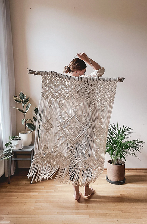
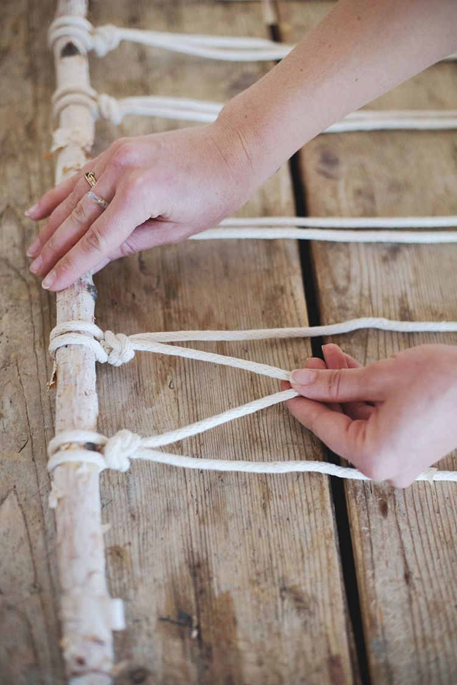

Boholand comenzó con nuestro amor por los textiles y el estilo boho.
Este estilo se diferencia por sus colores, tramas y materiales, para
crear espacios cálidos y muy personalizados, es un estilo libre,
desestructurado.
Dos amigas unidas por el amor a la deco, con carreras
y ocupaciones distintas al área, pero completamente amantes del diseño
interior. Ful convencidas de la deco low cost. Sabemos y creemos que
para tener una casa bonita no es necesario gastar miles, una
combinación de pequeños objetos realzan la totalidad del ambiente.
El estilo boho es NATURALEZA: madera, cuero, fibras vegetales, textiles
de algodón, plantas, detalles de cristal, cerámica. Lo natural nunca
falta.
Es por esto que acá vas a encontrar todo eso y mucho más.
Acompañanos que con nuestras manos creamos esos objetos únicos para tu
hogar.